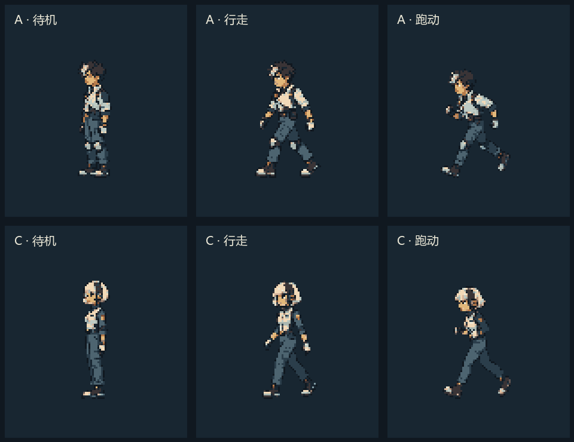

<!doctype html><html lang="zh-CN"><meta charset="utf-8"><meta name="viewport" content="width=device-width,initial-scale=1"><title>A / C · 基础动作试样</title>
<style>*{box-sizing:border-box}body{margin:0;background:#101820;color:#ece9d8;font:16px system-ui,sans-serif}main{max-width:1050px;margin:auto;padding:28px}h1{font-size:27px;margin:0 0 8px}p{color:#a6b8bf;line-height:1.7;margin:8px 0 20px}nav{display:flex;align-items:center;gap:12px;flex-wrap:wrap;padding:16px;background:#20313d;border-radius:12px}button,select,a{font:inherit;color:#ece9d8}button,select{background:#304653;border:1px solid #5e7883;border-radius:6px;padding:8px 13px;cursor:pointer}label{display:flex;align-items:center;gap:6px}input{accent-color:#e2b77a}section{display:grid;grid-template-columns:1fr 1fr;gap:20px;margin:20px 0}article{background:#182631;border:1px solid #304653;border-radius:12px;padding:18px;text-align:center}h2{font-size:20px;text-align:left;margin:0 0 8px}canvas{width:320px;height:480px;max-width:100%;image-rendering:pixelated}small{display:block;color:#9fb3ba}footer{font-size:14px;color:#9fb3ba}#status{color:#e2b77a}a{color:#e2b77a}details{margin-top:18px}details img{width:100%;image-rendering:pixelated}@media(max-width:650px){main{padding:14px}section{gap:8px}article{padding:8px}canvas{width:100%;height:auto}h2{font-size:17px}}</style>
<main><h1>A / C · 基础动作试样</h1><p>保留 A 的额发与斜襟、C 的短发与耳机。左侧视角 · 待机 / 行走 / 跑动 · 共 40 帧。</p>
<nav><label>动作<select id="action"><option value="idle">待机 · 4 帧</option><option value="walk" selected>行走 · 8 帧</option><option value="run">跑动 · 8 帧</option></select></label><label>速度<select id="speed"><option value="1">正常</option><option value="0.333">慢放 ×⅓</option></select></label><button id="play">暂停</button><button id="step">下一帧</button><label>帧<input id="frame" type="range" min="0" max="7" value="0"></label><span id="status">载入中</span><label><input id="guides" type="checkbox" checked>接地线</label></nav>
<section><article><h2>A · 勘探员</h2><canvas id="A" width="320" height="480"></canvas><small>额发 / 斜襟短外套</small></article><article><h2>C · 信号员</h2><canvas id="C" width="320" height="480"></canvas><small>黑白短发 / 高领耳机</small></article></section>
<footer>当前为造型与基础运动试样。64×96 整理帧来自生成源稿缩采样，尚未作为正式游戏资源验收。<a href="human-ac-basic-v001.zip">下载序列帧与预览</a> · <a href="qa/validation.json">检查记录</a></footer>
<details><summary>展开全部动作总览</summary></details></main>
<script>
// 两个角色共享播放时钟，便于比较同一动作阶段。
const actions={idle:{n:4,ms:180},walk:{n:8,ms:120},run:{n:8,ms:80}};
const ui=Object.fromEntries(['action','speed','play','step','frame','status','guides'].map(k=>[k,document.getElementById(k)]));
let atlases={},running=true,elapsed=0,previous=0,current=0,ready=false;
async function load(){for(const ch of ['A','C'])for(const a of Object.keys(actions)){const im=new Image();im.src=`final/${ch}-${a}.png`;await im.decode();atlases[`${ch}-${a}`]=im;}ready=true;requestAnimationFrame(tick);}
function draw(){const a=ui.action.value;for(const ch of ['A','C']){const c=document.getElementById(ch),g=c.getContext('2d');g.imageSmoothingEnabled=false;g.fillStyle='#182631';g.fillRect(0,0,320,480);if(ui.guides.checked){g.strokeStyle='#4d6470';g.beginPath();g.moveTo(10,400.5);g.lineTo(310,400.5);g.stroke();}g.drawImage(atlases[`${ch}-${a}`],current*64,0,64,96,0,0,320,480);}ui.frame.value=current;ui.status.textContent=`F${String(current).padStart(2,'0')} / ${actions[a].n}`;}
function tick(t){if(running){elapsed+=Math.min(t-previous,100)*Number(ui.speed.value);current=Math.floor(elapsed/actions[ui.action.value].ms)%actions[ui.action.value].n;}previous=t;draw();requestAnimationFrame(tick);}
ui.action.onchange=()=>{elapsed=0;current=0;ui.frame.max=actions[ui.action.value].n-1;};
ui.play.onclick=()=>{running=!running;ui.play.textContent=running?'暂停':'播放';};
ui.step.onclick=()=>{running=false;ui.play.textContent='播放';current=(current+1)%actions[ui.action.value].n;elapsed=current*actions[ui.action.value].ms;};
ui.frame.oninput=()=>{running=false;ui.play.textContent='播放';current=Number(ui.frame.value);elapsed=current*actions[ui.action.value].ms;};
load().catch(e=>{ui.status.textContent='加载失败：'+e.message;});
</script></html>
